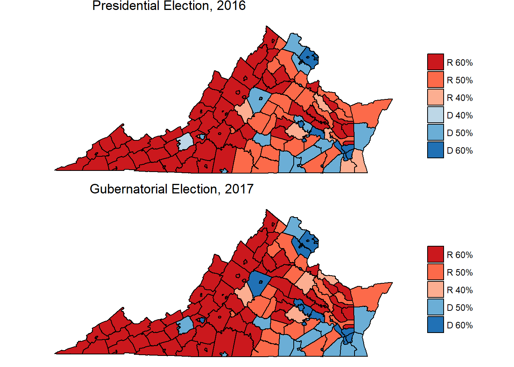
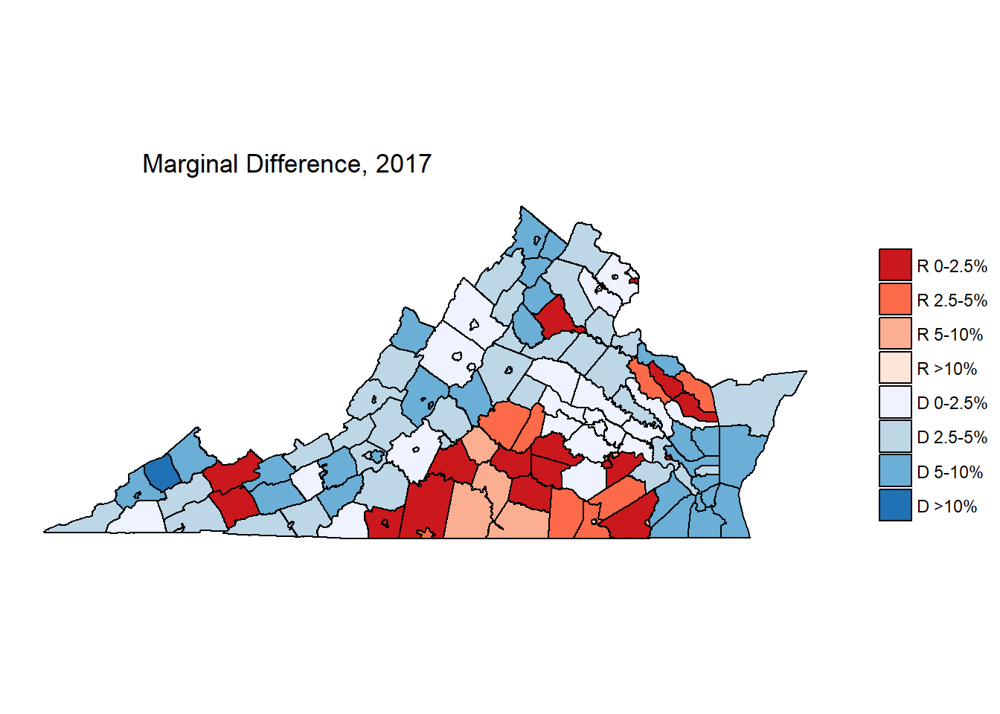
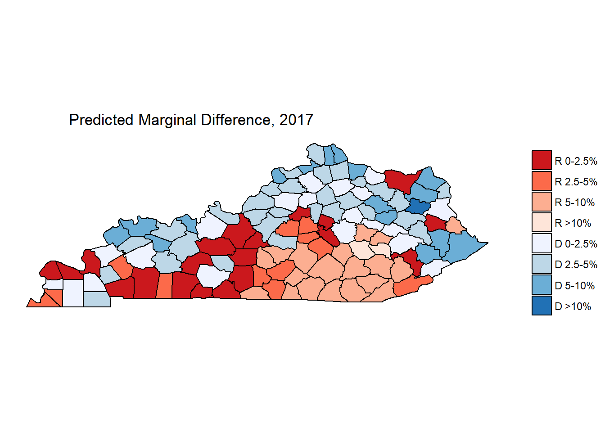
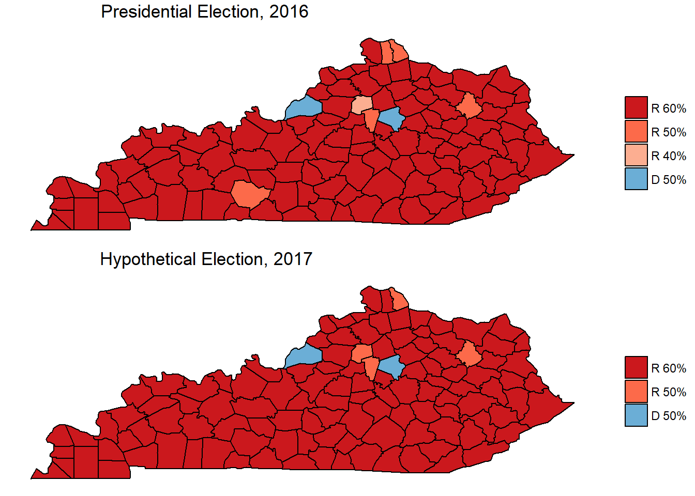

Kentucky and Virginia have considerable shared history. Kentucky was part of Virginia until 1792, and most of the earliest European settlers in Kentucky entered the state through the Cumberland Gap, which makes up the border between the two states. Between 1900 and 2004, Kentucky and Virginia voted for the same candidate for President in all but five elections. Since 2008, however, Kentucky and Virginia have been on divergent paths.
In 2008, Virginia cast their electoral votes for then-Senator Barack Obama for President, and has been a solidly “blue” state in Presidential elections ever since. Since 2009, both of Virginia’s US Senators have been Democrats. (Virginia is the fifth-most gerrymandered state in the country, so US House seats do not reflect the voting patterns of the state accurately). Meanwhile, Kentucky has not voted for a Democrat since 1996, and has had two Republican US Senators since 1999.
Like Kentucky, Virginia has an odd-year gubernatorial election. Virginia votes for Governor in the year after Presidential elections, while Kentucky votes the year before. Virginia’s latest election has been used as a harbinger by many pundits and analysts, who believe Democrats (who won in Virginia) will be either swept into power or at least come close during the 2018 midterm elections.
Ralph Northam, the Governor-elect of Virginia, won a convincing, nine-point victory on November 7, 2017. However, is that much different from how Virginia voted in the 2016 Presidential Election, when they voted for Democratic nominee, Hillary Clinton, by five percentage points? What seems like a massive victory only reflects a four point swing. I wondered how much impact a hypothetical re-running of the 2017 Virginia gubernatorial election in Kentucky would have.
Building a Model
I built linear regression model of counties in Virginia and their relationship to the change in the difference between the Democratic and Republican percentage of the general election vote in 2016 and 2017. I used the same independent variable to model change in turnout between the two elections. To do this, I depended heavily on the Electoral Transparency Data compiled by Data for Democracy. Many of these data points come from the US Census’ American Community Survey, but some are derived from the National Center for Health Services (the metro-nonmetro classification of counties), a calculation of the Simpson Diversity Index, and a measure of religiosity by county. I also pulled together the change in unemployment between the two elections, since that data point has proven to be useful in other election analyses.
In variable selection, I focused on items which could be measured accurately for both Virginia and Kentucky using data present for both states. For example, I didn’t use party registration, which is available for Kentucky but not Virginia, nor did I use voter turnout in the 2017 election as a variable in the model, as that would not be present in Kentucky. In the end, here is what I got:
Change in Turnout
Residuals:
Min 1Q Median 3Q Max
-0.093803 -0.024802 -0.001138 0.020329 0.134808
Coefficients:
Estimate Std. Error t value Pr(>|t|)
(Intercept) -2.880e-01 5.407e-02 -5.326 4.81e-07 ***
d_r_margin16 1.171e-01 5.675e-02 2.063 0.041253 *
turnout16 -7.998e-08 6.792e-08 -1.177 0.241350
Age65_plus 5.402e-06 1.514e-06 3.567 0.000522 ***
White -3.577e-02 5.913e-02 -0.605 0.546290
Ed_Bach 4.819e-01 2.274e-01 2.120 0.036123 *
Ed_GraduateDegree 5.647e-01 1.998e-01 2.826 0.005538 **
EvangelicalAdherents -8.981e-02 2.899e-02 -3.098 0.002432 **
SimpsonDiversityIndex 1.752e-02 5.539e-02 0.316 0.752337
MedianHousingCosts -1.005e-04 2.256e-05 -4.457 1.89e-05 ***
NCHS_MetroMetro -1.788e-02 1.124e-02 -1.590 0.114396
NCHS_MetroNonmetro -2.151e-02 1.164e-02 -1.847 0.067184 .
ue_delta 1.069e-01 5.251e-02 2.035 0.044043 *
d_r_margin08 -1.812e-01 5.702e-02 -3.179 0.001884 **
---
Signif. codes: 0 ‘***’ 0.001 ‘**’ 0.01 ‘*’ 0.05 ‘.’ 0.1 ‘ ’ 1
Residual standard error: 0.03721 on 119 degrees of freedom
Multiple R-squared: 0.5214, Adjusted R-squared: 0.4692
F-statistic: 9.974 on 13 and 119 DF, p-value: 7.334e-14The turnout model has different significant variables, and there isn’t much surprising here for people who study elections: older people, more educated people, and places with more expensive housing are more likely to vote. Similar to the above model, about half the variation in the model is explained in this model.
Visualizing Model Impact
Let’s first take a look at Virginia’s elections in 2016 and 2017:

The major differences in these maps appear in the northeast of Virginia (the DC Suburbs) and southeast Virginia (Hampton Roads, the 37th largest Metropolitan Area in the USA). If you squint, you can tell that these counties moved from slightly blue to dark blue. Maybe we should find a new map to highlight that.

Democrats gained nearly everywhere. The largest growth in Democratic vote share appears to come from more populous counties, which is impressive, because from a larger absolute base, even a small percentage change results in a large absolute gain in total votes.
Predicting Kentucky
Kentucky and Virginia aren’t very similar as a whole, but the individual counties might be comparative. If we take the data from the models above, and use the same data from Kentucky counties to predict what a hypothetical 2017 Virginia election might look like in Kentucky, here’s what the change would be:

For people used to looking at election returns in Kentucky, this map is more blue than anything you’ve probably seen before. It looks like Democrats DO stand to gain in many Kentucky counties when applying the model to Kentucky. The biggest gains appear in Eastern Kentucky counties where Barack Obama did particularly well in 2008, as well as urban counties in the Cincinnati suburbs as well as Western Kentucky mid-sized cities like Daviess County (Owensboro) and Henderson County (Henderson).
Interestingly, counties which show further gains for Republicans are concentrated in South Central Kentucky, which, like the Virginia areas that showed GOP gains, are historically counties with substantial tobacco production. That’s not controlled for in the model, yet it still shows up! Tobacco production across the United States has declined precipitously, and those areas in Kentucky are the most historically Republican, but this is an interesting observation anyway.
So, would these gains in Kentucky be enough to propel Kentucky Democrats to a victory?
| Measure | Democrat | Republican |
|---|---|---|
| Raw | 691,155 | 1,232,994 |
| Percent | 35.92% | 64.08% |

In a word, no. Even with substantial gains for Democrats in many counties, the Virginia election results do not even net Kentucky another county in a hypothetical election run under the same conditions. The 2016 Presidential election in Kentucky saw President Trump win by a margin of 63% - 33%. This model shows a hypothetical Republican defeating a hypothetical Democrat 64% - 36%. This is a 2% swing, which is less than Virginia’s 5% swing, and, of course, nowhere near enough to move the needle in the commonwealth.
With respect to the model, this isn’t too surprising! Keep in mind that the model of Virginia’s change in election results was driven majorly by education, race, and the NCHS Metropolitan distinction. Virginia has 43 counties which qualify as “Large Metro”, while Kentucky has 13. Virginia’s median county is 80% white; Kentucky’s median county is 96% white. The median Kentucky county has 5.2% of citizens who’ve earned a Bachelor’s Degree, while in Virginia, that number is 9.5%.
The factors driving voters towards Democrats in Virginia simply are not as pronounced in Kentucky. This, to me, is perhaps the greatest challenge for the Democrats in their quest to become a truly “national” party: the platform being presented to voters in 2017 is effective in places like Virginia, but it will not pay the same dividends in places like Kentucky. It may very well be the case that enough places in the United States resemble Virginia to sweep the Democrats back into power. However, places that look like Kentucky will likely not respond in a big enough way for Democrats to gain a foothold.
Conclusion
In case anyone was wondering, this exercise is purely hypothetical, and probably won’t have much predictive power at all. The factors which determine elections are different each year, in each place. This model represents what happened IN VIRGINIA, in 2017. When we apply this model to Kentucky, it only serves to demonstrate what would happen if these same factors changed in the same way.
Re-running the 2017 Virginia gubernatorial election in Kentucky would swing the vote towards Democrats, but not in a meaningful way. The factors which indicated a higher likelihood of voters swinging towards Democrats in Virginia are not present at the same level in Kentucky. If Democrats want to build power in Kentucky, Democrats need to widen their appeal to people who are less educated and more rural. Virginia was able to depend on non-white voters to widen their margin of victory between 2016 and 2017, but Kentucky does not have as much racial diversity as Virginia, and therefore Democrats must depend more heavily on white voters in Kentucky. Finding a way to do that without betraying their commitment to racial issues is very important for Democrats.